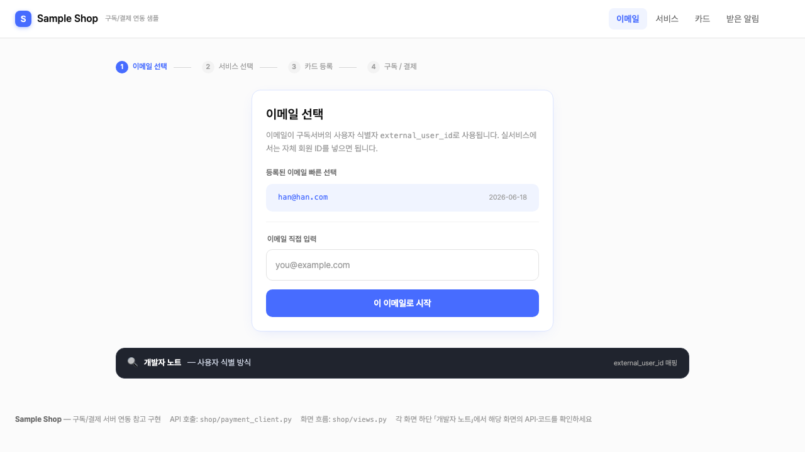
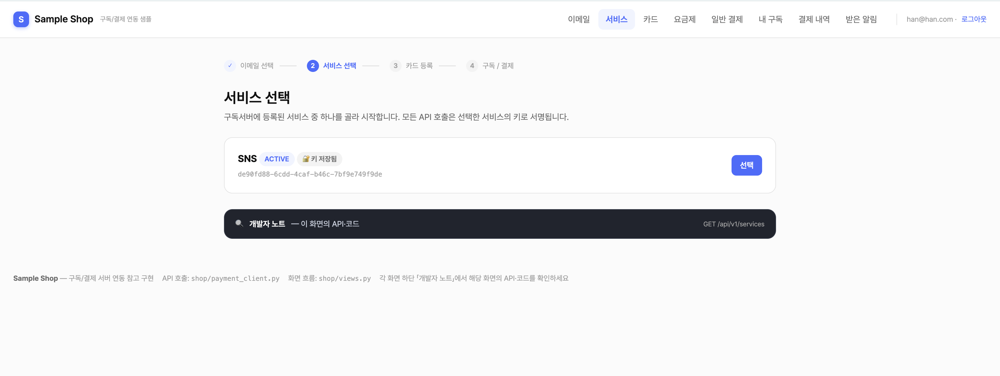
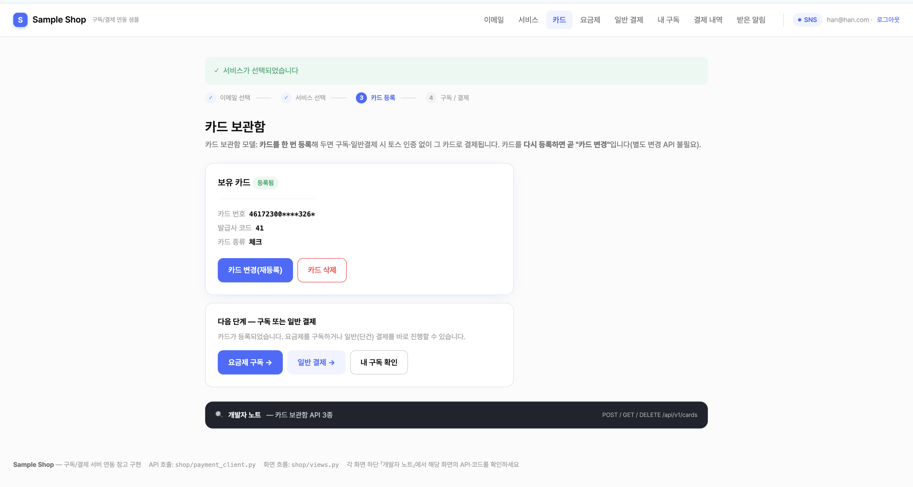
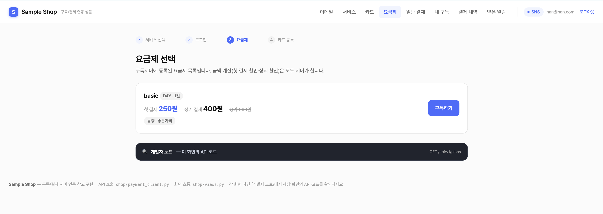
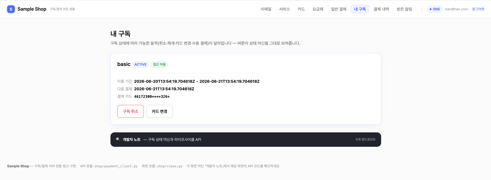
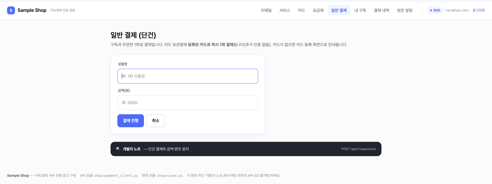
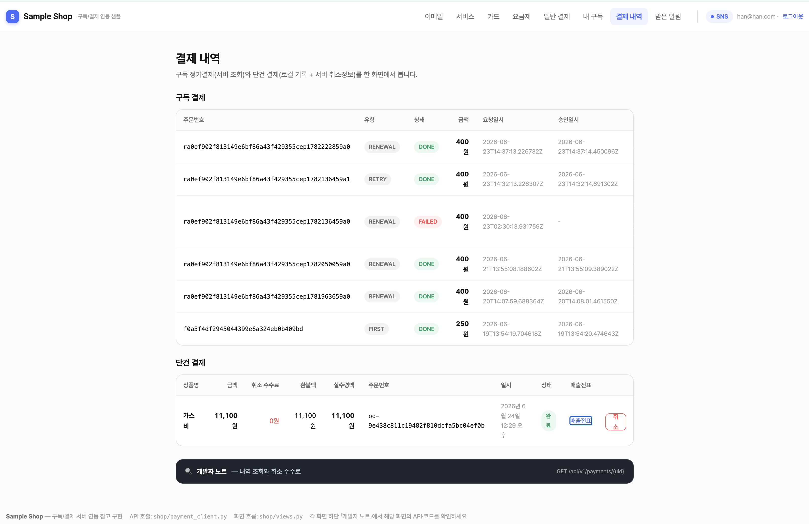
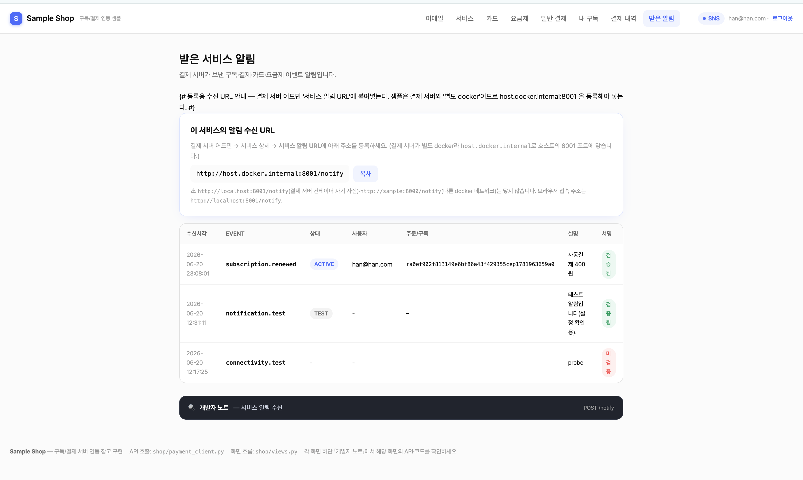

17. 샘플 서비스(sample_service) 사용법
🍎
전체 프로세스 한눈에 — 화면으로 따라가기
서비스 개발자가 연동을 시연하는 전체 흐름을 화면 순서대로 보여줍니다. 각 화면 하단의 「개발자 노트」에 그 단계가 호출하는 API가 정리돼 있습니다.
external_user_id 선택POST /cards · 구독·결제 전제POST /subscriptions · 등록 카드로POST /payments · 단건GET /payments · 단건 취소POST /notify · 웹훅 수신💬흐름 요지: ③ 카드 등록이 ④ 구독·⑥ 일반결제의 전제다(카드 보관함 모델). 카드가 없으면 결제서버가
404를 반환한다.
① 이메일 선택 (/login) — 고른 이메일이 결제서버의 사용자 식별자 external_user_id가 된다.

② 서비스 선택 (/services) — 결제서버의 서비스 목록에서 고르고 API 키를 저장한다.

③ 카드 등록 (/card) — 토스 빌링 인증창으로 카드를 등록한다(구독·결제의 전제).

④ 요금제·구독 (/plans) — 요금제와 실제 청구 금액을 보고 등록 카드로 구독한다.

⑤ 내 구독 (/my) — 상태·다음 결제일·등록 카드와 함께 취소·재개·카드 변경·수동 결제 버튼이 상태에 따라 보인다.

⑥ 일반결제 (/pay) — 구독과 무관한 단건 결제(등록 카드로 즉시).

⑦ 결제 내역 (/history) — 구독 결제(서버 API)와 단건 결제(로컬 DB)를 한 화면에서 통합 조회하고, 단건은 취소(환불)할 수 있다.

⑧ 받은 알림 (/notifications) — 결제서버가 보낸 웹훅(상태 변화 알림)을 서명 검증해 받은 내역.

💡참고: 아래 17.1~17.8은 위 흐름을 개념 → 코드 → 실행 → 규칙으로 풀어 설명합니다. 처음이라면 이 화면 흐름을 먼저 훑고 내려가세요.
17.1 이게 무엇이고, 왜 있나
sample_service(Sample Shop)는 결제 서버(payment_system)의 외부 서비스 역할을 하는 참조 구현입니다. 실제 토스페이먼츠 테스트 키로 카드 등록 → 빌링키 발급 → 결제 승인까지 진짜 API로 동작합니다.
목적은 둘입니다.
- 배우기: 서비스 개발자가 화면을 눌러 보며 "구독·결제를 붙이려면 무엇을 어떤 순서로 호출하는가"를 체득.
- 가져다 쓰기: 핵심 연동 코드(
shop/payment_client.py)를 그대로 복사해 자기 서비스에 이식.
💡참고: 이건 "결제 서버"가 아니라 결제 서버를 호출하는 쪽(고객을 가진 우리 앱)입니다. 둘은 별개 프로세스로 함께 띄워 연동을 시연합니다.
17.2 큰 그림 — 세 주체
연동에는 세 주체가 등장합니다. 샘플 서비스는 가운데 "외부 서비스(앱)" 자리를 연기합니다.
💡참고: 파란 화살표(②③)가 내 서비스가 작성하는 코드입니다 — 결제서버로의 HMAC API 호출(
payment_client.py)과 웹훅 수신(/notify). 회색은 토스·브라우저가 알아서 하는 부분입니다.
- 사용자 ↔ 토스: 카드번호는 토스 결제창에서만 다룬다(서비스·결제서버는 카드번호를 보지 않음).
- 샘플 ↔ 결제서버: 모든 호출은 API 키 + HMAC 서명으로 인증(
shop/payment_client.py). - 결제서버 → 샘플: 구독·결제·카드 상태가 바뀌면 알림(웹훅)을
POST /notify로 받는다.
17.3 화면이 곧 문서 — 「개발자 노트」
모든 화면 하단에 다크 패널 「🔍 개발자 노트」가 있습니다. 펼치면 그 화면이 어떤 API를 호출하고(메서드·경로·대응 payment_client.py 함수), 어느 뷰가 구현하며, 무슨 규칙을 지켜야 하는지를 그 자리에서 보여줍니다. 즉 화면을 따라가는 것만으로 API 레퍼런스를 함께 읽게 됩니다.
화면 ↔ 호출 API ↔ 클라이언트 함수 매핑:
| 화면(경로) | 시연하는 일 | 호출 API | payment_client.py |
|---|---|---|---|
로그인 /login |
사용자 식별자(external_user_id) 선택 |
— | — |
서비스 선택 /services |
결제서버의 서비스 목록·키 입력 | GET /api/v1/services(무인증) |
list_services |
카드 /card |
카드 등록/변경/조회/삭제(연동의 전제) | POST·GET·DELETE /api/v1/cards |
register_card/get_card/delete_card |
요금제 /plans |
구독 가능한 요금제·금액 | GET /api/v1/plans |
get_plans |
구독 /subscribe/{plan_id} |
등록 카드로 구독 생성 | POST /api/v1/subscriptions |
create_subscription |
내 구독 /my |
조회·취소·재개·수동결제·카드변경 | GET·.../cancel·/resume·/pay |
get_subscription/cancel/resume/manual_pay |
일반결제 /pay |
구독과 무관한 단건 결제 | POST /api/v1/payments |
create_one_off_payment |
결제 내역 /history |
구독+단건 내역, 단건 취소 | GET /api/v1/payments/{uid} · .../cancel |
— |
받은 알림 /notifications |
웹훅 수신·서명검증 데모 | POST /notify(수신측) |
— (수신 뷰 views.notify_receive_view) |
17.4 코드 구조 — 어디를 보면 되나
| 파일 | 역할 |
|---|---|
shop/payment_client.py |
연동의 핵심. HMAC 서명(sign_request) + 모든 API 호출(_request)이 한 파일에. Django 의존이 거의 없어 이 파일만 복사하면 연동 끝(settings 폴백 2줄만 교체). |
shop/views.py |
화면 흐름·토스 successUrl 콜백 처리(billing_success_view → POST /api/v1/cards), 카드 미등록 시 /card 유도, 401 키 재입력, 웹훅 수신(notify_receive_view). |
shop/templates/shop/*.html |
각 화면 + 하단 「개발자 노트」. card.html에 토스 SDK requestBillingAuth() 호출부. |
shop/urls.py |
경로 → 뷰 매핑. |
🍎쉽게 말하면 "무엇을 호출하나"는
payment_client.py, "언제 호출하나(화면 흐름)"는views.py를 보면 됩니다.
17.5 실행 방법
샘플과 결제 서버 두 프로세스를 함께 띄웁니다. 먼저 결제 서버에 서비스를 등록해 키를 발급받아야 합니다.
(1) 사전 — 결제 서버에서 서비스 등록
- 결제 서버 어드민(
/admin) → 서비스 등록(허용 IP에127.0.0.1포함). - 등록 직후 표시되는 API 키 / HMAC 시크릿을 복사(서비스 상세의 키 복사 버튼). 이 값은
.env가 아니라 실행 후/services화면에 입력한다. - 요금제 1개 이상 생성(체험 요금제 포함 권장).
(2) 샘플 설정 — .env
cp .env.example .env 후 채운다. 서비스 API 키·HMAC 시크릿은 .env에 넣지 않는다 — 실행 후 /services 화면에서 직접 입력한다.
PAYMENT_API_BASE=http://127.0.0.1:8000 # 결제 서버 주소(포트 포함)
# 토스 빌링 client key — 비우면 /card 화면의 '수동 authKey' 폴백으로 테스트 가능
TOSS_CLIENT_KEY=test_ck_xxx
💡참고: 서비스 API 키·HMAC 시크릿은 앱 실행 후
/services화면에서 서비스를 고르고 입력하면 세션에 저장되어 이후 모든 API 호출에 쓰인다(화면에서 여러 서비스 전환 가능). 그래서.env에는 두지 않는다. 보호 화면은 키 입력 전까지 자동으로/services로 유도한다.
(3) 구동 — 로컬
# 터미널 1 — 결제 서버
cd payment_system && uv run uvicorn app.main:app --port 8000
# 터미널 2 — 샘플
cd sample_service
python3 -m venv .venv && .venv/bin/pip install -r requirements.txt
.venv/bin/python manage.py migrate
.venv/bin/python manage.py runserver 8001
→ 브라우저에서 http://127.0.0.1:8001 접속.
(3') 구동 — docker
cd sample_service && docker compose up -d --build # http://localhost:8001 (호스트 8001 → 컨테이너 8000)
17.6 데모 시나리오 — 권장 순서
⚠️중요: 카드 등록이 구독·결제보다 먼저입니다(카드 보관함 모델). 구독/결제 화면에서 카드가 없으면 자동으로
/card로 유도하고, 등록을 마치면 원래 흐름으로 복귀합니다.참고: 각 화면 캡처는 맨 앞 "전체 프로세스 한눈에" 섹션에 순서대로 있습니다. 아래는 따라 할 때의 단계와 확인 지점입니다.
- 이메일 선택(
/login) → 서비스 선택(/services). - 카드 등록(
/card) — "카드 등록창 열기" → 토스 테스트 카드 입력(테스트 모드는 청구 없음). 완료 시POST /api/v1/cards로 빌링키 발급·보관, 마스킹 카드만 표시. (토스 키가 없으면 수동 authKey 폴백으로 흐름 테스트) - 구독(
/plans→ 구독하기) — 등록 카드로 즉시 구독(토스 재인증 없음). 또는 일반결제(/pay). - 확인 — 샘플
/my(ACTIVE·다음 결제일), 결제서버 어드민(구독·결제 내역), 토스 개발자센터(테스트 결제). - 라이프사이클 —
/my에서 취소(만료일까지 유지)·재개, PAST_DUE/SUSPENDED 시 수동 결제, 카드 변경(재등록=교체, 기존 구독이 새 카드 자동 참조). - 알림(
/notifications) — 상태 변화 시 결제서버가 보낸 웹훅 수신 내역 확인.
17.7 내 서비스에 가져다 쓰기 — 지켜야 할 규칙
shop/payment_client.py를 복사하는 게 출발점입니다. 그리고 「개발자 노트」에도 반복되는 연동 4규칙을 지킵니다.
- 타임아웃(
503 PAYMENT_UNRESOLVED)은 실패가 아니다 — 서버가 결제를 PENDING으로 유지했다가 정산 스윕으로 확정한다. 실패로 처리하지 말 것. - 금액은 서버 세션/DB에 보관했다가 서명된 본문으로 전달 — 토스 successUrl 쿼리스트링을 신뢰하지 말 것(변조 방지).
order_id는 서비스 내 고유 + 멱등 — 같은order_id재요청은 기존 결제를 반환한다(이중결제 방지).- 접근 제어는
access_allowed하나로 — 구독 조회 응답의 이 불리언으로 판단하고, 상태별 분기를 직접 구현하지 말 것.
⚠️주의(알림 수신 등록): 샘플은 결제 서버와 별도 docker다. 결제 서버 컨테이너에서 샘플의
/notify에 닿으려면 알림 URL을http://host.docker.internal:8001/notify로 등록한다(localhost:8001·컨테이너명은 닿지 않음)./notifications화면 상단에 이 주소가 복사 버튼과 함께 표시되고, 어드민의 '테스트 알림 전송'으로 연결을 즉시 확인할 수 있다. 수신 측 서명검증·전달 규약은 서비스 알림 참고.
17.8 핵심 호출 예시 (요청/응답)
샘플이 실제로 주고받는 두 호출. 모든 요청에는 payment_client.py가 HMAC 서명 4개 헤더(x-service-key/x-timestamp/x-nonce/x-signature)를 붙인다.
① 카드 등록 — POST /api/v1/cards (토스 successUrl 콜백에서 호출)
// 요청 — customer_key·auth_key는 토스 빌링 인증창에서 받은 값
{ "external_user_id": "han@han.com", "customer_key": "cust-123", "auth_key": "toss_auth_key_xxx" }
// 응답 201 — billingKey는 절대 내려오지 않고 마스킹 카드만
{ "external_user_id": "han@han.com", "card": { "issuerCode": "61", "number": "123456******1234" } }
② 구독 생성 — POST /api/v1/subscriptions (등록 카드로 즉시, 토스 재인증 없음)
// 요청 — 금액·카드 정보 없음(서버가 요금제·등록 카드에서 처리)
{ "external_user_id": "han@han.com", "plan_id": "3fa85f64-5717-4562-b3fc-2c963f66afa6", "trial": false }
// 응답 201
{ "id": "…", "plan_name": "프리미엄 월간", "status": "ACTIVE", "access_allowed": true }
🍎쉽게 말하면 서비스가 직접 챙기는 호출은 ①카드 등록 → ②구독 요청 둘뿐이고, 자동결제·연장은 서버가, 상태 변화 통지는 알림(
/notify)이 처리한다. 더 많은 엔드포인트·필드·오류코드는 서비스 API 연동 참고.함께 보기: API 전체 레퍼런스는 서비스 API 연동, 11.8의 최소 연동 예제와 함께 보면 코드가 더 빨리 잡힙니다.